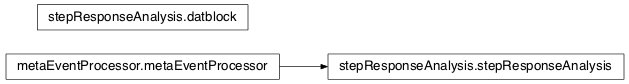
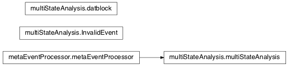
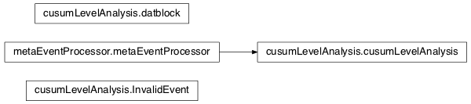

A class that extends metaEventProcessing to implement the step response algorithm from [Balijepalli:2014]
| Created: | 4/18/2013 |
|---|---|
| Author: | Arvind Balijepalli <arvind.balijepalli@nist.gov> |
| License: | See LICENSE.TXT |
| ChangeLog: |
mosaic.stepResponseAnalysis.datblock(dat)[source]¶Smart data block that holds a time-series of data and keeps track of its mean and SD.
mosaic.stepResponseAnalysis.stepResponseAnalysis(icurr, Fs, **kwargs)[source]¶Bases: mosaic.metaEventProcessor.metaEventProcessor
Analyze an event that is characteristic of PEG blockades. This method includes system information in the analysis, specifically the filtering effects (throught the RC constant) of either amplifiers or the membrane/nanopore complex. The analysis generates several parameters that are stored as metadata including:
Blockade depth: the ratio of the open channel current to the blocked current
Residence time: the time the molecule spends inside the pore
- Rise time: the 1/RC of the response to a step input (e.g. the entry or exit of the
molecule into or out of the nanopore).
When an event cannot be analyzed, the blockade depth, residence time and rise time are set to -1.

Analyze a multi-step event
| Created: | 4/18/2013 |
|---|---|
| Author: | Arvind Balijepalli <arvind.balijepalli@nist.gov> |
| License: | See LICENSE.TXT |
| ChangeLog: |
mosaic.multiStateAnalysis.datblock(dat)[source]¶Smart data block that holds a time-series of data and keeps track of its mean and SD.
mosaic.multiStateAnalysis.multiStateAnalysis(icurr, Fs, **kwargs)[source]¶Bases: mosaic.metaEventProcessor.metaEventProcessor
Analyze a multi-step event that contains two or more states. This method includes system information in the analysis, specifically the filtering effects (through the RC constant) of either amplifiers or the membrane/nanopore complex. The analysis generates several parameters that are stored as metadata including:
Blockade depth: the ratio of the open channel current to the blocked current
Residence time: the time the molecule spends inside the pore
- Tau: the 1/RC of the response to a step input (e.g. the entry or exit of the
molecule into or out of the nanopore).
When an event cannot be analyzed, all meta=data are set to -1.
| Keyword Args: |
|
|---|

Analyze a multi-step event with the CUSUM algorithm
| Created: | 2/10/2015 |
|---|---|
| Author: | Kyle Briggs <kbrig035@uottawa.ca> |
| License: | See LICENSE.TXT |
| ChangeLog: |
mosaic.cusumLevelAnalysis.cusumLevelAnalysis(icurr, Fs, **kwargs)[source]¶Bases: mosaic.metaEventProcessor.metaEventProcessor
Implements the CUSUM algorithm (used by OpenNanopore for example) in MOSAIC. This approach sacrifices including system information in the analysis in favor of much faster fitting of single- and multi-level events.
Some known issues with CUSUM:
To use it requires four settings:
"cusumLevelAnalysis": {
"StepSize": 3.0,
"MinThreshold": 3.0,
"MaxThreshold": 10.0,
"MinLength" : 10,
}
StepSize is the number of baseline standard deviations are considered significant (3 is usually a good starting point). MinThreshold and MaxThreshold set the sensitivity of the algorithm, (lower is more sensitive, a good starting point is to set MinThreshold equal to StepSize and MaxThreshold about 3x higher). MinLength is the number of samples to skip after detecting a jump, in order to avoid triggering during the rise time and giving an artificially high number of states. This number of points is also skipped when averaging levels. About 4RC is usually a good bet. CUSUM will detect jumps that are smaller than StepSize, but they will have to be sustained longer. Threshold can be thought of, very roughly, as roughly proportional to the length of time a subevent must be sustained for it to be detected. The algorithm will adjust the actual threshold used on a per-event basis in order to minimize false positive detection of current jumps This algorithm is based on code used in OpenNanopore, which you can read about here: http://pubs.rsc.org/en/Content/ArticleLanding/2012/NR/c2nr30951c#!divAbstract